Performance Tuning
Originally written by Jeff Jones and Tony Dimitrie, updated by Jeff Jones
Performance Tuning
Introduction
One of the questions that always comes up as part of a OneStream implementation – after the appropriate design has been implemented and processes have been put into place for the workflow – is “How can I improve performance?”
There are many different areas within OneStream that can be tweaked to improve performance or fine-tune the platform to improve the performance of a particular process; the following chapter will discuss the architecture of the OneStream platform with performance tuning in mind.
Performance Tuning
Understanding Application Server Roles
OneStream’s architecture supports multiple application servers, which are the heart of the system and designed to handle specific activities. Application servers can be configured to support processor-intensive consolidation tasks, data-intensive Stage activities, or general navigation and reporting activities. The role that each server plays in the environment architecture will have a different impact on the hardware that is available to the application server.
• General application server – processes user navigation clicks, Cube View execution, dashboard execution, report execution. These tasks are mostly single-threaded in nature and are not intensive on the CPU of the server.
• Stage application server – processes Stage activity in the Stage engine (load and transform, journals, forms, Analytic Blend processing). These tasks are multi-threaded in nature and are processor-intensive.
• Consolidation application server – processes all consolidation activity in the finance engine (process cube, consolidate, translate, calculate). These tasks are multi-threaded in nature and are processor-intensive.
• Data management server – processes all data management sequences in the system. Tasks are multi-threaded in nature and are processor-intensive.
After understanding the roles of the application servers in the environment, you can then begin to understand how each server will be affected by tasks performed in the application.
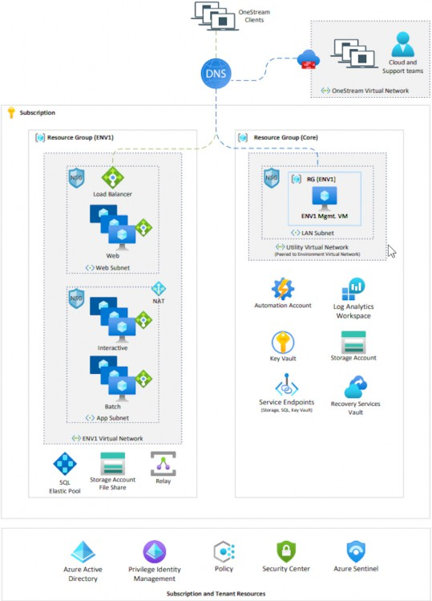
Figure 14.1
The above diagram shows the infrastructure setup for a OneStream SaaS environment in Azure:
• Interactive application server scale sets – processes user navigation clicks, Cube View execution, dashboard execution, report execution. These tasks are mostly single-threaded in nature and are not intensive on the CPU of the server.
• Batch application server scale sets – processes Stage activity in the Stage engine (load and transform, journals, forms, Analytic Blend processing), process consolidation activity (process cube, consolidate, translate, calculate), as well as data management. These tasks are multi-threaded in nature and are processor-intensive.
Performance Tuning
Stage Application Server Performance
Within the Stage engine in OneStream, there are a few steps that are performed to initially process data that is brought into the staging area. During the initial process of “load and transform,” there are multiple sub-steps that are performed, including parsing the source data, executing transformation rules, deleting data from the Stage tables, and posting data to the Stage tables. Each of these steps can be individually performance-tuned to improve the overall task time.
Performance Tuning › Stage Application Server Performance
Adjusting Workflow Cache Page Size
When importing source data into the Stage engine in OneStream, data is brought into a data table in memory on the Stage application server for processing. The size of the data table is based on the cache page size settings that are defined within the import input channel of the workflow. The settings define how large the pages are for multi-threading during the load and transform process.
The cache page settings define the size of the cached pages and the maximum number of cached pages in memory. If you are importing a smaller number of records into the Stage engine (for example, 200,000), the default settings (20,000 cache page size, and 200 cache pages in memory limit) will be sufficient, as this will allow for up to a total of 4 million records to be processed in RAM on the application server. In this example, the workflow settings would generate 10 data pages in memory.
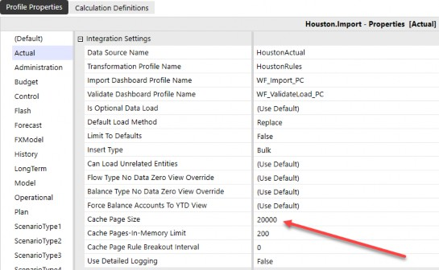
Figure 14.2
If the cache page size is set to a small number, such as 2,000, and the cache pages in memory limit is increased to 2,000 – which will still allow for 4 million records to process in memory (2,000 x 2,000) – it will actually cause a decrease in performance as the number of pages to process in memory will be much larger. There will also be an opportunity for SQL Server deadlock issues to occur, which will reduce the efficiency of the process. Below is an example of the task steps that can be viewed when importing a data file.
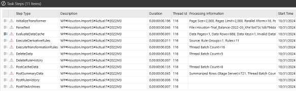
Figure 14.3
For large source datasets (2 million source data records), the Workflow Profile cache page size and maximum number of cache pages in memory should be adjusted to accommodate the full data record set; they should provide large enough cache pages for efficient processing on the application server. For example, if processing a 2 million record source dataset, the Workflow Profile cache page size should be adjusted to 100,000 and the cache pages in memory limit set to 200 allowing for up to 20 million records in memory.
If the cache page size is not large enough to accommodate the source data record set, the process will begin to write the data records out to temp files on the disk on the application server for processing, which is inefficient and will result in much longer processing times.
The cache page settings should be configured where the cache page size and number of pages will always accommodate the largest file size that would be imported into the Workflow Profile.
Performance Tuning
Understanding Transformation Rule Performance
The performance of the execution of transformation rules in the load and transform process is dependent on the types of transformation rules used within the transformation rule profile assigned to the Workflow Profile. Each type of transformation rule will have an associated processing cost associated with it. Each of the transformation rule processing types that are available have been broken up by cost, below.
Performance Tuning › Understanding Transformation Rule Performance
Low Processing Cost Transformation Rule Types
These transformation rule types require a simple update and pass through to the database.
Performance Tuning › Understanding Transformation Rule Performance › Low Processing Cost Transformation Rule Types
Map One to One
• Source Value → Target Value
• Table Join/Update Query
Performance Tuning › Understanding Transformation Rule Performance › Low Processing Cost Transformation Rule Types
Map Composite
• A#[199?-???*]:E#[Texas]
• Performs a pattern match based on the first condition, and then verifies the second dimension condition. In this example, it would pattern match on the account ? and then would check for the results that contain Texas
Performance Tuning › Understanding Transformation Rule Performance › Low Processing Cost Transformation Rule Types
Map Range
• Range xxxx,yyyy → Target
• Executes an UPDATE SQL Statement with a BETWEEN clause as the main criteria.
Performance Tuning › Understanding Transformation Rule Performance › Low Processing Cost Transformation Rule Types
Map List
• List (xx,yy,xx) → Target
• Executes an UPDATE SQL Statement with an IN(xx,yy,zz) clause as the main criteria.
Performance Tuning › Understanding Transformation Rule Performance › Low Processing Cost Transformation Rule Types
Map Mask (One Sided *)
• Mask 12* → Target
• Executes an UPDATE SQL Statement with a (Like %) clause as the main criteria.
Performance Tuning › Understanding Transformation Rule Performance › Low Processing Cost Transformation Rule Types
Map Mask (* to *)
• * → *
• Executes an UPDATE SQL Statement that passes the source value as the target value.
Performance Tuning › Understanding Transformation Rule Performance
Low/Medium Process Cost Transformation Rule Types
This rule type requires a simple update and passes through to the database. However, masking queries must use table scans, which can hurt performance on large record volumes.
Performance Tuning › Understanding Transformation Rule Performance › Low/Medium Process Cost Transformation Rule Types
Map Mask (One Sided ?)
• Mask 12??56 → Target
• Executes an UPDATE SQL statement with a (Like 12??56) clause as the main criteria. This forces the data server to use a pattern match, which can be slow on large record volumes.
A performance tip for this rule type is to keep the total number of placeholders (?) to a minimum. The more placeholders in each statement, the longer it will take the database server to process the mask rule.
Performance Tuning › Understanding Transformation Rule Performance
Transformation Rule Types with very high processing costs
These rule types are required to return a record set with all dimension fields back to the Stage application server in order to perform the conditional mapping process. This causes a large amount of data transfer and memory utilization to be performed.
Performance Tuning › Understanding Transformation Rule Performance › Transformation Rule Types with very high processing costs
Map Range (Conditional)
• Range xxxx,yyyy → #Script
• Executes a SQL statement that pulls ALL dimension fields from a worktable with a BETWEEN clause as the main criteria, and passes the records back to the application server. This is required for conditional processing. After conditional processing is complete, individual update statements are sent to the database server as part of a record set update process.
Performance Tuning › Understanding Transformation Rule Performance › Transformation Rule Types with very high processing costs
Map List (Conditional)
• List (xx,yy,zz) → #Script
• Executes a SQL Statement that pulls ALL dimension fields from worktable with a IN(xx,yy,zz) clause as the main criteria and passes records back to the application server. This is required for conditional processing. After conditional processing is complete, individual update statements are set to the database server as part of a record set update process.
Performance Tuning › Understanding Transformation Rule Performance › Transformation Rule Types with very high processing costs
Map Mask (Two-Sided – Source Values used to Derive Target Values)
• Mask 12* → Target*
• Executes a SQL Statement that pulls only the fields for the specified dimension using a LIKE clause as the main criteria and passes the records back to the application server. This is required in order to use the source value to derive the target value. After conditional processing is complete, individual UPDATE statements are sent to the database server as part of a record set update process.
Performance Tuning › Understanding Transformation Rule Performance › Transformation Rule Types with very high processing costs
Map Mask (Conditional)
• Mask 12* → #Script
• Executes a SQL Statement that pulls ALL dimension fields from worktable with a LIKE clause as the main criteria and passes the records back to the application server. This is required for conditional processing. After conditional processing is complete, individual UPDATE statements are sent to the data server as part of a record set update process.
Performance Tuning › Understanding Transformation Rule Performance › Transformation Rule Types with very high processing costs
Derivative
• Executes a SQL statement that pulls ALL dimension fields from worktable with a LIKE clause as the main criteria and passes the records back to the application server. This is required for the application server to derive the calculated rows. After the calculate value process is complete, the new records are inserted into the worktables on a one-by-one basis.
The following performance tips can be implemented for the transformation rule types with high processing costs to assist with performance when possible.
Performance Tuning › Understanding Transformation Rule Performance › Transformation Rule Types with very high processing costs
Map Range (Conditional)
• Keep conditional ranges restrictive. Rather than using one large range (0000 to 9999), break the range up into multiple smaller rule blocks (0000 to 1000), (1001 to 2000), etc. This will keep memory utilization optimal, and the rules will process faster.
Performance Tuning › Understanding Transformation Rule Performance › Transformation Rule Types with very high processing costs
Map List (Conditional)
• Keep List restrictive. Rather than using one large list that could return a large volume of records, break the list into multiple smaller lists. This will keep memory utilization optimal, and the rules will process faster.
Performance Tuning › Understanding Transformation Rule Performance › Transformation Rule Types with very high processing costs
Map Mask (Two-Sided – Source Values used to Derive Target Values) and (Conditional)
• Keep Mask criteria restrictive. Never use a * without any other criteria in the rule definition. This can cause a very large volume of records to be brought back to the application server. Use criteria such as (1*, 2*, 3* or A*, B*, C*) to limit each query to a small chunk of what you need to map. This will keep memory utilization optimal, and the rules will process faster.
The execution of transformation rules during the “load and transform” step of the Workflow process is heavily multi-threaded and can be processor-intensive on the application server. During this process, it is normal to see the CPU on the application server increase in utilization as the system will use 16 threads for processing (all the processing occurs on the application server).
Performance Tuning
Increasing Delete Performance
Once the data has been successfully parsed, and transformation rules have been successfully applied to transform the source data to the appropriate target members, any data that had existed previously for the workflow Data Unit needs to be deleted from the Stage tables.
With large datasets, this step of the load and transform operation will need to remove a large amount of data from the Stage table. If this step of the process is taking a large amount of time to complete, there are a few available load options within OneStream that can assist with performance improvement.
Performance Tuning › Increasing Delete Performance
Replace Background (All Time, All Source IDs)
Replaces all Workflow Units (individual period within the selected year and scenario combination for a particular Workflow Profile) in the selected workflow view and all source IDs in a background thread while the new file parses or connector execution is running. The delete is performed while the parse is performed.
| Note: This load method must always be used to delete ALL source IDs. If the workflow uses multiple source IDs for partial replacement during a load, this method cannot be used. |
This method can be used for monthly input frequencies.
Performance Tuning › Increasing Delete Performance
Replace (All Time)
Replaces all Workflow Units in the selected workflow view (if multi-period). Forces a replacement of all time values in a multi-period workflow view.
Performance Tuning
Understanding Load Cube and Consolidation Performance
Once the data has been successfully loaded and transformed and validated, the data is then loaded to the cube. The load cube step of the Stage workflow process moves the data from the Stage tables in the application database into the data record tables in the cube. The first time the cube is loaded for a workflow/scenario/time combination, the process will perform database record inserts into the following three database tables in the application database:
• Calc Status Table (CalcStatus)
• Time Stamp Table (DataUnitCacheTimeStamp)
• Data Record Table (DataRecordxxxx or BinaryDataxxx)
Any subsequent load cube operations that are performed for the same workflow/scenario/time combination will be more efficient than the initial load cube, as the process will perform database updates on these tables versus inserts, which will be more efficient at the database level.
Performance Tuning › Understanding Load Cube and Consolidation Performance
Analytic Blend Considerations
Analytic Blend is used to report on large volumes of transactional data that are not appropriate to store in the traditional financial cube. To analyze data by invoice, a standard cube would require metadata to store the data records. In a short period of time, most of the invoice metadata would become superfluous because of the transactional nature of the data.
Analytic Blend processing occurs on the Stage application servers in the environment by default; however, by utilizing the Blend settings on the workflow, it can be assigned to run on a specific application server or group of servers. There are two main ways to execute the processing of Analytic Blend within OneStream.
Performance Tuning › Understanding Load Cube and Consolidation Performance › Analytic Blend Considerations
Overnight Batch Jobs
• Run via data management to populate the Blend database table with transactional data for reporting.
• Appropriate for large Analytic Blend implementations (millions of records generated).
Performance Tuning › Understanding Load Cube and Consolidation Performance › Analytic Blend Considerations
Interactive Workflow
• Analytic Blend runs interactively by the user via in-line workflow tasks. Users access the workflow as they normally do, and execute load and transform to populate the Blend database table.
• Appropriate for small Analytic Blend tasks.
It is important to design the Analytic Blend process to be run appropriately, based on the volumes of data that will be processed. If there is a large data warehouse that contains the transactional detail information that populates the Blend tables, this should be scheduled to run as a data management job nightly to populate the tables for the end-users to report on the next day.
Performance Tuning
Consolidation Application Server Performance
Consolidation application servers are the heart of the financial engine in the OneStream environment. When a consolidation is executed within OneStream, the engine will multi-thread the operation as much as possible to obtain optimal performance and execute the process as efficiently as possible. In order to achieve this, the server will use all the CPUs available to it to multi-thread the calculations being performed at the base-level entities and continue up the entity hierarchy to the top-level parents. It is normal behavior for the CPU utilization on the server to reach 99% during the consolidation operation, as it is using all the resources available to multi-thread the process efficiently. As the consolidation reaches the upper-level parents in the entity hierarchy, the CPU utilization will begin to decrease as there is less opportunity for multi-threading (since the data is consolidated to the top-level parent).
Performance Tuning › Consolidation Application Server Performance
Understanding Consolidation Application Server Performance
Within a OneStream application, there are numerous things that can affect the performance of the consolidation.
• Formulas within the application (cube business rules, Member Formulas)
• Metadata structure
Deep hierarchies drive up consolidation times due to the large number of intermediate parent entities.
Parallelism is limited on parent entities; faster processors allow for parent calculations to complete faster.
• Data Unit size (cube, entity, parent, cons, scenario, time, view)
Performance Tuning › Consolidation Application Server Performance
Tools Available
When a consolidation operation is running slower than would be expected, there are a few tools available to diagnose what could be contributing to the slow performance.
• Long-running formulas debug option within the application server configuration file. A formula that is running for 3 to 5 seconds or more is something that should be investigated; this is a very long amount of time for a formula to compute.
This setting allows the system to write to the error log any formulas that – when the consolidation is run – take longer than the numeric value specified to complete processing.
o Located in the XFAppServerConfig.xml file under the multi-threading settings section of the configuration file.
Requires IISRESET on all application servers for change to take effect.
<NumSecondsBeforeLoggingSlowFormulas>5</NumSecondsBefore LoggingSlowFormulas>
• Application analysis reports are available in the standard application reports (available on Solution Exchange).
Reports provide analysis of the dimension statistics, formula statistics, data statistics, and Data Unit statistics. These reports are discussed in further detail later in this chapter.
Performance Tuning
OneStream System Diagnostics Solution
The OneStream System Diagnostics (OSD) Solution Exchange solution is available for system administrators to examine application metrics and application data volumes. It allows the administrator to capture snapshots of the application at a period of time and perform an analysis of key application metrics and data volumes.
Performance Tuning › OneStream System Diagnostics Solution
OneStream System Diagnostics (OSD)
OneStream System Diagnostics is broken up into four main pages and an Overview page:
Environment Analysis
Application Analysis
Task Analysis
Live Monitoring
The Environment Analysis page creates snapshots of the environment hardware state by gathering the information from the environment monitoring features in the software. The snapshots provide details on the application servers and database server.
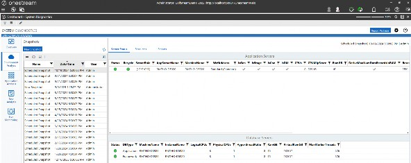
Figure 14.4
The application servers table lists each of the application servers contained in the environment as well as additional information.
• Role assignment
• Number of CPUs
• RAM
• Application server configuration file settings (parallelism, reserved memory setting, etc.)
CPUMipScore
This is important to note as it shows how fast the CPUs are on the server. The higher the MIP recorded score, the faster the processors in the environment. Fast processors are best for consolidation and data management server roles in the environment.
The database servers table lists the database server that is currently being used for the application and framework databases in the environment, and corresponding resources.
The Resources button within the page will perform a resource validation that displays a traffic light report, based on calculations performed in the solution. This is a great tool to verify that the environment has the appropriate number of general application servers and consolidation servers based on historical metrics of supporting 4.5 concurrent users per CPU before including any deflators due to large Data Units and shared server roles.
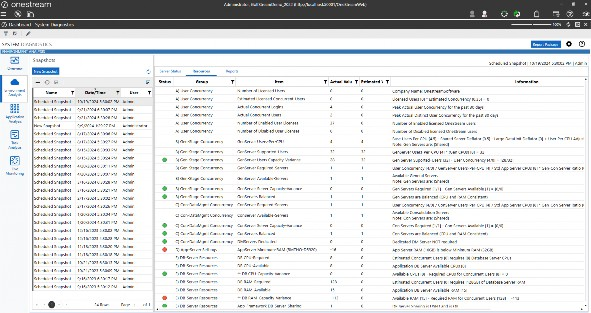
Figure 14.5
There are also some additional analysis reports that are available for viewing within the environment analysis page:
• Database Sizes
Displays a listing of each of the databases that are contained within the Azure SQL elastic pool and the corresponding disk space allocated and used by each database in the elastic pool. This allows you to visualize the amount of disk space currently used in the elastic pool and what free space is available.
• Memory Manager report
This report displays how often the IIS memory manager executes in the environment to remove the oldest Data Units from the analytic cache in the environment. If the memory manager is executing at a high rate on a daily basis, this is an indication that the servers require additional RAM resources to handle the analytic model and data volumes being processed. An example of these entries can be seen in the OneStream error log below:
Summary: The Data Cache Memory Manager removed Data Units from the cache. Initially there were 2,399 Data Units and 7,984,332 records, and the largest Data Unit contained 357,552 records. Afterwards there were 896 Data Units and 2,475,821 records, and the largest Data Unit contained 168,664 records.
• Resources validation
Displays the same detail found in the resources tab in a PDF report format.
• Server detail
Provides a detailed report of each server in the environment and its corresponding application server role and settings.
• Server startup
Provides a report of the number of IIS restarts that have been performed each day for each server in the environment. The software is designed to restart IIS once every 24 hours.
• The Application Analysis page allows the user to create application snapshots by gathering information maintained by the selected application and its database tables. The page displays application metrics, data volume statistics, and reports. The page also allows administrators to compare snapshots between applications and from different time periods to see changes in the application.
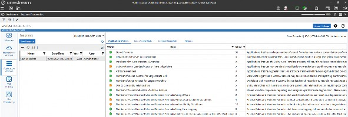
Figure 14.6
• Application metrics
Displays the application metrics that are considered key stakeholder drivers for the performance of an application. Clicking on a row will show additional details on the item selected.
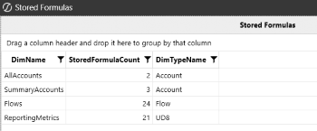
Figure 14.7
• Data Volume Stats
Provides detailed information on data volumes within the application database. Data volumes are broken out into cube data volume, Stage data volume, register data volumes (planning), and Blend data volumes. This page allows the OneStream administrator to visually see where data is stored in the application.
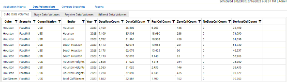
Figure 14.8
• Compare Snapshots
Allows the OneStream administrator to compare any two application snapshot metrics side by side. This is useful to see if there were changes to metadata or rules that were completed recently that could affect performance.
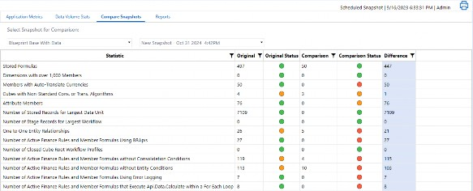
Figure 14.9
• Reports
Provides a list of reports that outline any Solution Exchange solutions installed in the application, database table size, list of long-running formulas from the error log (if long-running formula switch is enabled).
Provides a snapshot summary report that includes the application metrics and data volume stats in a single PDF summary report. Data Units larger than 1,000,000 records may cause consolidation and reporting performance degradation. Consider using extensibility to reduce the size of Data Units. In addition, consider leveraging the aggregation feature when processing abnormally large data sets when possible. Lastly, consider using hybrid scenarios when encountering reporting performance issues related to large Data Units.
Performance Tuning The Task Analysis page facilitates research tasks by concurrency, statistics, and overall counts.
This is very useful for viewing daily logins to the environment by module (Windows app, Excel, API) to view true concurrency in the system over a period of time.
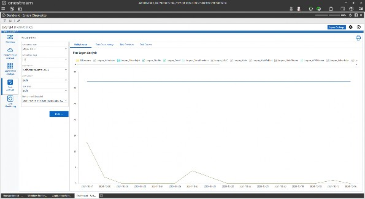
Figure 14.10
The graph displays a line to show the estimated user concurrency and also the maximum supported user concurrency. They can be used as a guide against the total user logons to verify that there are enough general application servers in the environment to support the user community.
The Task Concurrency module will display charts showing the number of tasks that were run on a day, by task type, and then allow for drilldown into the graphs to view the data by hour and minute, as well as the individual task in task activity.
Task Statistics display daily runtime statistics by type (Max,Min,Avg) for the task type selected. This data can be filtered by application servers and by applications.
Task Counts display the total number of daily tasks that were run for a particular task type. For example, if the user selects Cube View, it will display the total number of Cube View tasks run for a day and display how many were completed, failed, or cancelled.
The Live Monitoring Module provides environment and task health data over a given timeframe. The user is able to set a duration of time to monitor the system and an interval in seconds where the system will capture pre-defined environment metrics and then display them in a traffic light report. This process is performed via a data management job in the solution to capture the metrics, before writing the results to a report with explanations.
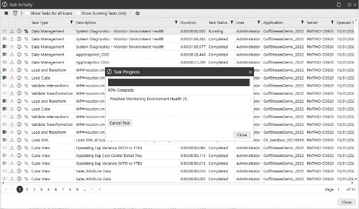
Figure 14.11
When the data management job is complete, the results can be viewed in the Analysis report, which displays the results captured and highlights any items that are critical to address in the environment.
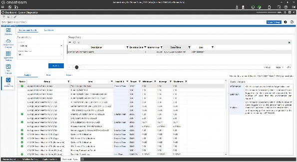
Figure 14.12
The Live Monitoring module also offers a means to monitor a particular task type and identify the task as unhealthy if it is running for a long period of time (identifying environment resources at that period of time). This can be useful when a process is not responding, and if there is a particular environment resource that is under pressure, which needs to be addressed accordingly.
Performance Tuning
Solution Exchange Solutions (What Application Servers Are Used?)
With the ability to use Solution Exchange solutions to further extend the OneStream platform, it is important to understand what application servers are used for processing in these solutions. For example, what servers are used to perform a calculation in the Specialty Planning solutions?
Performance Tuning › Solution Exchange Solutions (What Application Servers Are Used?)
Specialty Planning
Specialty Planning solutions are a group of similar applications created around a common OneStream relational blending framework. Each has been configured to focus on a single Specialty Planning subject, including People Planning, Cash Planning, Capital Planning, Thing Planning, and Sales Planning.
Specialty Planning solutions will use the general application servers for navigation within the solution dashboards, but many of the buttons within the register are configured to execute on the data management servers within an environment. For example, the Calculate Plan button – which executes the calculation plans for the items in the register – will execute the process on a data management server in the environment. Since this is a heavily multi-threaded process and can be longer-running, the button within the solution is configured to run this on a data management server rather than a general application server. If you find that the calculation executes on a general application server in the environment, this can be modified within the button dashboard component for the solution within the action items Selection Changed Server Task.
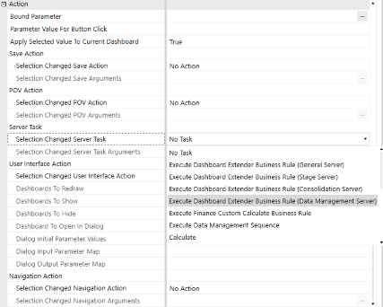
Figure 14.13
This can be useful for dashboard design inside of the platform to define what server type is used to execute a process for a button.
Performance Tuning
Managing Changes in a OneStream Environment
Deploying changes to a production environment should be avoided during times of high load and high application activity. Changes to the following types of application artifacts – especially – should not be performed against a production environment experiencing heavy activity:
• Business rules, whether they contain global functions or not
• Confirmation rules
• Metadata, especially when using Member Formulas
Applying changes like this while the production system is under a high level of activity may have a negative impact on servers and have the potential to cause running processes to produce an error.
Standard environments are recommended to schedule production changes during slow periods or non-work hours. Large environment managers should also consider the use of the Solution Exchange solution Process Blocker, which allows for a pause of critical processes to perform maintenance on the system, without having to shut down the entire application. Process Blocker allows current tasks to be completed, while any new requests are queued, allowing the changes to be applied safely and effectively. Once these changes are in place, it is recommended to significantly limit the ability for users to make such changes during high volume times.
It is key that servers get a chance to recycle for good system memory health.
For active, global environments with data management sequences regularly being executed, a recycle of IIS is recommended every 24 hours for these OneStream app servers, which is default for customers.
Performance Tuning › Managing Changes in a OneStream Environment
Application Design Impacts Performance
In this section, we will discuss how factors related to application design impact the environment’s performance.
For example, let’s say you have an environment built to support up to 75 users. This is the equivalent of using a small charcoal grill. As a consultant, knowing that a small charcoal grill is being used means that the requirements, design, and build will be limited. The small charcoal grill has constrained options. So having decided on the meal to make, there will be limitations as well. For instance, the designer won’t be able to cook sausages, baked potatoes, and grilled vegetables all at the same time.
What’s the problem with the constraints of the grill? Well, firstly, it takes a significant time to warm up as the charcoal burns and turns gray. Next, you are unable to fine-control the heat to cook the food quicker. Finally, the small charcoal grill is not conducive to cooking a lot of items at one time! There are considerations on what needs to be cooked when. This can be considered a queueing process. Potatoes first, sausages next, and finally grilled vegetables last? Because potatoes take the longest to cook? Or is the order different because there are more sausages to cook, and the baked potatoes are cut into tiny pieces so they can cook faster? Basically, lots of considerations to think about, and the various factors represent the same conundrum that designers and implementers have when designing and building an application with environment performance in mind.
Performance Tuning › Managing Changes in a OneStream Environment › Application Design Impacts Performance
Financial Data Model
Building a well-designed financial model is crucial for environment performance. This is the foundation of every data collection process that will be developed now and into the future. As mentioned previously, data model size and Data Unit size are other factors that impact environment performance. These factors contribute to the physics of data modeling. Awareness of data modeling physics is the key for any high-performing data model within the application and the environment. The goal of the financial data model is to meet customer requirements by partitioning the metadata and data into manageable consumable chunks that are relevant to audiences. Let’s look at how data model size and Data Unit size affect performance.
Performance Tuning › Managing Changes in a OneStream Environment › Application Design Impacts Performance › Financial Data Model
Data Model Size
Cube, dimensions, and dimension metadata members create the data model. Dimension metadata members and hierarchies are often determined at the time of the project. The customer normally has some vehicle for reporting their data (whether it was in a former solution or something as simple as Excel).
The metadata could include dimensions such as Entity or Account, or any other User Defined dimension such as Cost Center, Department, Region, State, or Data Type. What usually isn’t decided during requirements are cubes and extensibility. They are hugely important during design because they create the data partitioning for best performance. As mentioned in previous chapters, all designs should start with extensibility. For data modeling design on cubes and extensibility, please refer to Chapter 3: Design.
Why is data partitioning so important? Data partitioning provides operational flexibility and improves performance. This is because the unit of work is broken up into data chunks that are more manageable and operationally relevant. Cube data is stored in data record tables by year. From there, any calculation or consolidation processing is broken down further by unit of work. The unit of work is processed by the Data Unit, which consists of cube, entity, parent, consolidation, scenario, and time. The remaining dimensions and dimension members exponentially create the data model and the potential cube cells that can be created.
Let’s look at a diagram of how physics plays a role between the data model and performance.
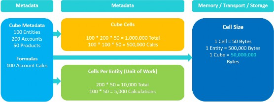
Figure 14.14
This example demonstrates a very basic data model. The metadata consists of cube, entities, accounts, and products. Remember that the unit of work is determined by the Data Unit. Cube and entity are part of the Data Unit along with parent, consolidation, scenario, and time, while accounts and products are not. The data model has 200 accounts and 50 products. Out of the 200 accounts, we have 100 accounts that are calculated. That is a ratio of 50% of our accounts calculating data. In turn, for every cube/entity/parent/cons/scenario/time combination, we will have 200 accounts and 50 products. What does this mean for the total number of cube cells and unit(s) of work?
Performance Tuning › Managing Changes in a OneStream Environment › Application Design Impacts Performance › Financial Data Model › Data Model Size
Cube Cells Created from Data Model
100 entities * 200 accounts * 50 products = 1,000,000 total cube cells
100 entities * 100 calc accounts * 50 products = 500,000 total cube cells from calculations
Performance Tuning › Managing Changes in a OneStream Environment › Application Design Impacts Performance › Financial Data Model › Data Model Size
Cube Cells per Entity (Unit of Work)
One entity unit of work = 200 accounts * 50 products = 10,000 total cells per entity
One entity unit of work = 100 account calculations * 50 products = 5,000 total cells from calculations
Once the data model is determined, how does this tie back to performance? We know that breaking up the unit of work is important for performance, but what’s behind the scenes?
Determining the number of cells is key, but what does the cell size look like, and what is the cost to store and transport the cell data in a single cube? Using our diagram and example from Figure 14.14:
Performance Tuning › Managing Changes in a OneStream Environment › Application Design Impacts Performance › Financial Data Model › Data Model Size
Cell Size for Memory, Transport, and Storage
One cell = 50 bytes
One entity = 10,000 total cells * 50 bytes = 500,000 bytes
One cube = 1,000,000 total cells * 50 bytes = 50,000,000 bytes
This is a simple example of a data model and the resources needed to store and transport cell data. In reality, most data models are much larger. Data models come in all sorts of shapes and sizes where additional dimensions are used and/or dimension member counts are larger to accommodate requirements. The more dimensions and dimension members outside the Data Unit used in a data model, the more consideration is needed to determine potential cube cells and units of work per entity.
Another impact on performance – in terms of the design of the data model – is the entity hierarchy. The consolidation server really loves an entity hierarchy with lots of base entities and fewer parent entities. This is because of the multi-threaded processing of the unit of work. Base entities can be processed in parallel and leverage the CPU threading on the consolidation server.
In Figure 14.15, the entity hierarchy has five base entities that roll up to one parent entity.
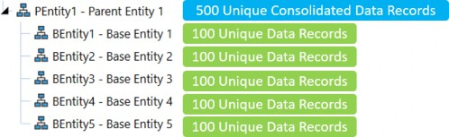
Figure 14.15
From a performance perspective, the consolidation server will efficiently process the base entities as they can be processed in parallel and consolidate to only one parent. During the consolidation process, the CPUs on the consolidation server will sit at around the 90-95% mark. This is good. The CPUs are using their multi-threading capabilities to split the unit of work across all CPUs on the consolidation server.
During this time, the database server is also working as data is being written/updated within the server. However, it’s not as hard as with the consolidation servers. It is much easier to update data records that already exist in the database table, in comparison to inserting new data records into the database table. CPUs on the database server will sit at around 40%. This is normal behavior. The consolidation servers are the robust servers, and these are the servers built to take the brunt of the consolidation process.
Also, there is a possibility that the data records for each base entity are unique and don’t share common data record intersections. This is considered a non-aggregating pattern. Therefore, during the consolidation, PEntity1 cannot aggregate the data records from its base entities to combine into a single data record. The final consolidation at PEntity1 will consist of 500 unique data records.
In Figure 14.16, the entity hierarchy has more of a one-to-one ratio between base and parent entities. For every parent entity, one base entity rolls up to it. This is a one-to-one relationship; five base entities and six parent entities in this hierarchy.
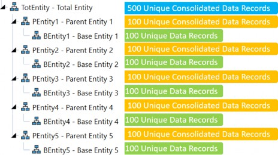
Figure 14.16
But what happens in terms of performance? Introducing the additional parent levels with the one-to-one relationship will change the way both the consolidation and database servers work. In addition, extra work is happening at all the PEntity-level parents, as they are essentially replicating the same data records as child entities data.
The extra work (consolidating the same data as child entities) is done in a more single-threaded manner, creating increased performance times. In this scenario, the CPUs on the consolidation servers will perform at a 40-50% level, and the database server will perform at an 80-90% level.
The roles are now reversed compared to an entity hierarchy with fewer parents. The database server is now taking the brunt of all the work, since there is a lot of writing of data to all the parents.
Again, this is in a single-threaded manner. This hierarchy has six parents to have to write to, versus one parent in the other entity hierarchy. In addition, the data records are in a non-aggregating pattern, so the top parent entity cannot optimize data storage to common data records. At the end of the consolidation, the cube-stored data record count is 1,500 in this hierarchy, compared to 1,000 cube data records in the previous illustration.
One last data model concept to consider – in terms of performance – is turning on the stored share option through the consolidation algorithm type on the cube. As a default, share is dynamically calculated on the fly using (Translated + OwnerPreAdj * % of Consolidation). When the stored share option is turned on, the same logic is executed but is now stored in the DataRecordXXXX tables.
When the consolidation runs, the consolidation and database servers perform differently when the storing of the share data records is executed. The same behavior happens if the entity hierarchy has a one-to-one relationship between parent and base entities. The consolidation server will process at 40-50%, while the database server will process at 80-90%. There are a lot more data records to now write to the DataRecordXXXX tables, and this process is not able to take full advantage of the CPUs on the consolidation server. Share is now stored and is the base for elimination data records. By default, elimination data records are always stored in the database table.
To summarize, data partitioning is vital for optimal performance. The data model is primarily the key to partitioning the unit of work and providing optimal performance. Cube and entity are drivers for total cube cells and unit(s) of work. Together, they combine to partition data efficiently for calculations, consolidations, reporting, and operational relevance. The data model also has a direct relationship with data volumes, which will be covered in the next section.
Performance Tuning › Managing Changes in a OneStream Environment › Application Design Impacts Performance › Financial Data Model
Data Records and Data Unit Size
In the previous section, the relationship between the data model and performance was discussed. In this section, the impact of data records and Data Unit sizes on performance will be discussed.
Before jumping into data records and Data Unit sizes, let’s look at the foundation tables in which the data records are stored.
Prior to loading data into a cube, the source data goes through a transformation process. During the transformation process, the source data is mapped and validated against dimension members determined as part of the data model. When source data is first imported, the source data resides in tables within the staging engine. As the data gets transformed and prepared for the cube, this is the opportunity to aggregate the source detail data to target summarized data through the mapping process.
Once the data is prepared for the cube and the cube is loaded, the data resides in two tables: StageToFinanceLoadResult, which is a table associated with the staging engine, and the DataRecordXXXX table, which is a table associated with the finance engine. The XXXX in the DataRecord table indicates the year. This is a data partitioning technique that is inherent within the infrastructure. Data is stored by year.
Performance Tuning › Managing Changes in a OneStream Environment › Application Design Impacts Performance
Anatomy of DataRecordXXXX Table
The DataRecordXXXX table can be identified as the consolidation tables for any data collection process, whether it is Actual, Budget, Planning, etc. Data records are stored in these tables from either import, forms, journals, the result of calculations, stored share, or eliminations. The table contains 46 columns that hold dimension member IDs, data cell values, and data cell status. The first seven columns are related to concepts that were discussed as part of the data model. These columns are associated with partitioning and Data Unit dimensions.
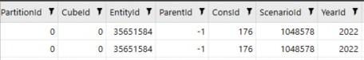
Figure 14.17
Performance Tuning › Managing Changes in a OneStream Environment › Application Design Impacts Performance › Anatomy of DataRecordXXXX Table
CubeId
The CubeId is a unique Id assigned to the cube upon cube creation. The CubeId has a direct relationship with EntityId and PartitionId, and is part of the Data Unit.
Performance Tuning › Managing Changes in a OneStream Environment › Application Design Impacts Performance › Anatomy of DataRecordXXXX Table
EntityId
The EntityId is a unique Id assigned to each Entity member upon Entity member creation. The EntityId has a direct relationship with the CubeId and PartitionId and is part of the Data Unit.
Performance Tuning › Managing Changes in a OneStream Environment › Application Design Impacts Performance › Anatomy of DataRecordXXXX Table
ParentId
The ParentId is a unique Id assigned to each parent member. The ParentId will populate with a valid parent during the consolidation process when the direct entity/parent relationship is executed. ParentId is part of the Data Unit.
Performance Tuning › Managing Changes in a OneStream Environment › Application Design Impacts Performance › Anatomy of DataRecordXXXX Table
ConsId
The ConsId is a unique Id assigned to each cons member. The ConsId is specific to each cons member and is static. For instance, ConsId 176 is USD. The ConsId is part of the Data Unit.
Performance Tuning › Managing Changes in a OneStream Environment › Application Design Impacts Performance › Anatomy of DataRecordXXXX Table
ScenarioId
The ScenarioId is a unique Id assigned to each scenario member upon scenario member creation. The ScenarioId is part of the Data Unit.
Performance Tuning › Managing Changes in a OneStream Environment › Application Design Impacts Performance › Anatomy of DataRecordXXXX Table
YearId
The YearId is a unique assigned Id based on the year associated to the DataRecordXXXX table. The YearId is part of the Data Unit.
Performance Tuning › Managing Changes in a OneStream Environment › Application Design Impacts Performance › Anatomy of DataRecordXXXX Table
PartitionId
The PartitionId is a unique Id to divide the unit of work into chunks. The PartitionId has a direct relationship with the EntityId. Every Entity member is assigned to a specific PartitionId within the DataRecordXXXX table. Within the EntityId and PartitionId relationship, different CubeIds exist.
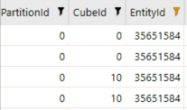
Figure 14.18
In the above illustration (Figure 14.18), the entity exists in multiple cubes, which were created through the data model. CubeId 0 will be the top-level cube, while CubeId 10 is the cube where the entity resides.
In addition to the Data Unit and partition columns, there are 12 monthly data value columns and 12 monthly cell status columns.
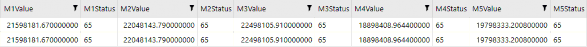
Figure 14.19
Performance Tuning › Managing Changes in a OneStream Environment › Application Design Impacts Performance › Anatomy of DataRecordXXXX Table
Value Columns
Every DataRecordXXXX table contains 12 monthly value columns M1-M12. These store the data cell values for a specific data record by month. For every data record, there are 12 data cell value columns.
Performance Tuning › Managing Changes in a OneStream Environment › Application Design Impacts Performance › Anatomy of DataRecordXXXX Table
Status Columns
Every DataRecordXXXX table contains 12 monthly status columns M1-M12. These store the data cell statuses for specific data records by month. For every data record, there are 12 data cell status columns. Common statuses for base entities are:
65 which indicates Cell Amount <> 0.00, Is Real Data = True, Is Derived Data = False, and Storage Type = Calculation
33 which indicates Cell Amount <> 0.00, Is Real Data = True, Is DerivedData = False, and Storage Type = Input
18 which indicates Cell Amount = 0.00, Is Real Data = False, Is Derived Data = True, and Storage Type = StoredButNoActivity
For a parent entity, a common status is
97, which indicates a parent with data,Is RealData = True,Is Derived = False,Storage Type = Consolidation
Now that some of the key columns for the DataRecordXXXX table have been explained, data records and data volumes can be discussed.
A data record is a record that consists of a combination of 18 different dimension members. Data records can be created in many forms. Data records can be created as the result of mapping source data in the staging engine and loading into the DataRecordXXXX tables. Data records can be submitted through forms or journals.
In addition, data records can be created as a result of calculations or consolidations. Data records are stored for eliminations as well as when stored share is used in the data model design. Stored share is typically created dynamically, and not stored. However, if stored share is turned on, the data records for share will be stored in the DataRecordXXXX table.
For every unique data record created in the DataRecord table, there are 12 value columns, one for each month. That means there are 12 data cells per data record in the DataRecord table. The first month that data is loaded into the DataRecordXXXX table takes a little time. The reason is that this is the first month when data records are inserted into the table. For all subsequent months, the data cell value is updated on the data record for that month. This technique allows for faster loading to the cube since data records are being updated versus inserted. In addition, the number of data records is controlled as there is no unique data record by month.
As illustrated below (Figure 14.20), one entity contains 1,000 data records through import, calculation, forms, journals, and elimination. Each one of those data records contains 12 data cell values. Using simple multiplication, the total data cells for this entity is 12,000.
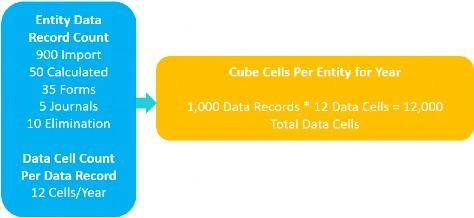
Figure 14.20
As part of the project, it is highly recommended to review the Application Analysis Dashboard found in the OneStream Diagnostics Solution Exchange solution. This dashboard highlights key metrics that support Data Unit records, Data Unit sizes, and the optimization of formulas.
• Formula statistics – provides visibility into all the Member Formulas and dynamic calculations by dimension and the impact on the CPU usage. This is very useful when identifying member calculations in conjunction with CPU usage.
• Data statistics – provides insight into cube records broken out by scenario and origin. In addition, the report identifies how many data records were imported through the workflow. The explosion factor is a ratio metric that identifies the percentage of data records created in the import origin as a result of calculations. Experience has shown that the lower the explosion factor, the better the performance.
• Data Unit statistics – provides insight into data records by the Data Unit. This is the most impactful report for understanding the data records at base entities, and data records at parent entities. The data records can be shown by local currency, translated currency, and elimination. If using the stored share option, there will be data records shown for share as well. This report should be used as part of all implementations.
Why is all this important? Because data record volumes and data cell count have significant impacts on performance. Optimally, for a well-performing full-year consolidation, the top-of-the-house consolidation entity should be at approximately 250,000 total data records in a cube. This equates to 3,000,000 total data cells for the year. During a full-year consolidation, 3,000,000 data cells will be processed. Once the data records start to reach beyond this point, physics and technology play a bigger role in performance. This is where hardware comes into play.
As the data record count grows past 250,000 total data records at the top entity, adjusting the hardware can prove useful in optimizing the consolidation servers. The optimization of a consolidation server can be done in a few ways:
Adding more processors
Increase multi-threading capabilities
The addition of faster CPUs
By adding more processors and/or increasing multi-threading capabilities, there is an opportunity to improve parallel processing. This means that more base-level entities can be processed at once, and each unit of work is performed faster. The downside is that the consolidation server is working faster than the database server and creates even more database pressure, which limits scalability.
The database server would need to be addressed for more resources to be applied.
At some point, however, there is a point of diminishing returns. It doesn’t matter how many CPUs or multi-threading get added or increased. The data record volume is just too great to power through the parent entities. This could even happen at a base entity if the base entity contains ~90% of the overall data records, for example. At the parent entity level, there are fewer multi-threading options and more single-threaded processes. Therefore, threading on the CPUs becomes less effective and is now dependent on the CPU processors and processor speed. Faster processors have a big impact on large parent entities. A minimum CPU clock speed of 3.7 GHz – 4.0 GHz is preferred.
As much as faster processors sound fantastic, there are some limitations. In cloud environments, physically replacing the CPUs with faster processors is not possible. The CPU and CPU processors are provided by the cloud providers and the data center. As a consultant, this may require a discussion after the data model and data record volumes are determined, and the question to be asked is, “Does the customer deem consolidation performance acceptable?” If data record volumes exceed 250,000 total data records at any parent entity, or at the top entity, and consolidation performance time is not where the customer would like, then it spawns the conversation to determine if the customer is at the proper SaaS level.
This example started out as a small charcoal grill. After having defined all requirements and completing the design and build, you may realize that a bigger cooking vessel is needed to cook everything on the menu.
Performance Tuning
Conclusion
This chapter outlined some of the tools that are available for properly tuning a OneStream application to meet your customers’ needs. Tuning opportunities exist for each component of OneStream; they help ensure that the overall processing times of end-users’ daily workflows are as optimal as possible.
Performance Tuning
Epilogue (Jeff Jones)
My first user conference was in May of 2015, at Splash, in Boston, MA.
This was the first time that I was able to personally experience talking with the OneStream customer and partner community, and I really felt the enthusiasm people had for this platform.
The customer and partner community was so enthusiastic about the software – and where it was headed – and about the service that was provided. The last event of the user conference was at the Heart and Soul of Boston, Fenway Park. Peter Fugere and I were able to go onto the field at Fenway before the Red Sox and Rangers game, and OneStream Software was welcomed by the Red Sox on the video board at the ballpark. Being a HUGE baseball fan, this is something that I will never forget!
Performance Tuning
Epilogue (Tony Dimitrie)
When I first joined OneStream back in 2011, we had six of us jammed up in one big suite, broken out into two offices and a ‘main lobby’. Welcome to OneStream! The photo (right) shows my desk when I was in the office.
This lovely desk and hutch set was part of the new renovation of OneStream.
I became good friends with UPS and the FedEx delivery folks. This is also where I found out that John Von Allmen hates peanut butter, razzed Jacqui Slone with Little River Band, enjoyed Friday afternoon mimosas, and put Jody Di Giovanni in a corner. Literally, we tucked her away in the corner when she joined. Nobody puts Jody in the corner. Little known facts.
When I was not at my desk or at a customer, I spent time in the conference room (left) either on calls or delivering training for our first offering of the Administrator Build Class.
We could only hold eight students in the class. You can’t see it in this picture, but the bathroom is right next to the conference table where the trainer trains.
The biggest decision to make during training was what we should NOT have for lunch. The walk of shame to the bathroom was real.
When training wasn’t happening, we would use the conference room for our weekly OneStream meeting. During this time, we would dial into the Free Conference meeting number, where Eric Davidson would dance to the erotic, dulcet tones of the hold music.
This third image (right) shows the place to warm up on a cold Michigan winter day – the IT room. This room served a dual purpose – the location for our physical server, and the hottest place on earth.
I look at these pictures, and I can’t believe where we are today. These pictures serve as some of the greatest memories of my lifetime, and I would never trade these experiences for anything. I am so fortunate to have gone through this journey with all my brothers and sisters. I thank everyone in this book because these are the people who I grew up with, and I love them all like family. Did you know Peter Fugere is kind of a big deal?